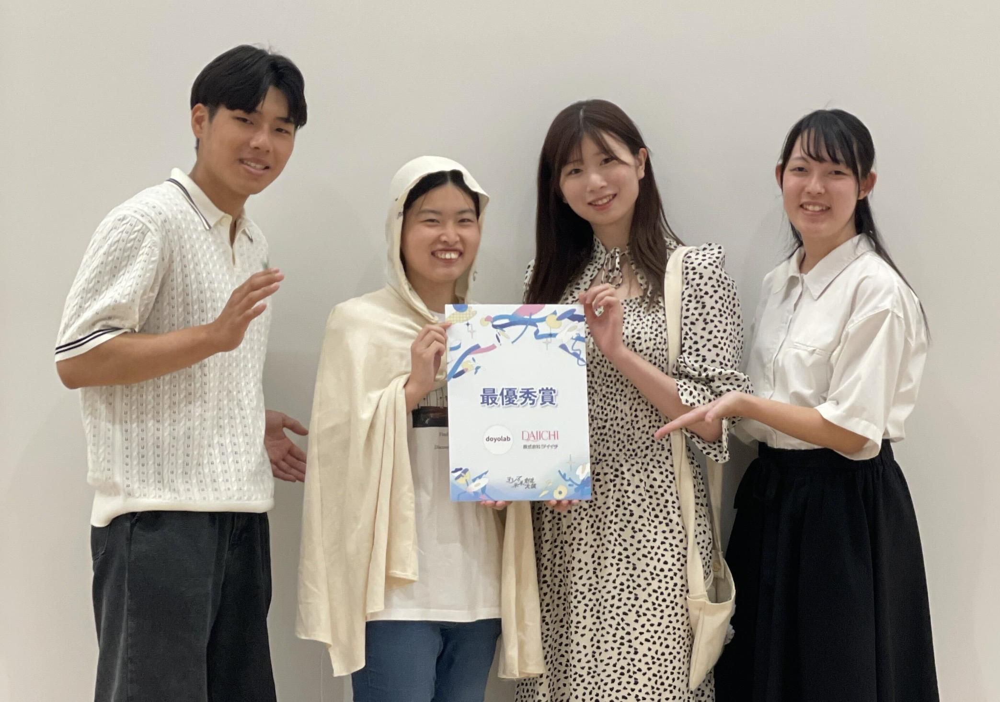

２０２５年７月１８日
やったこと- 最終発表のスライド作成
- ポシェットの刺繍
- 最終発表
最終発表のスライド作成
使用する動画を生成AIで作成。スライド全体を見て、構成を整え、完成。
ポシェットの刺繍
葉の刺繍を加えて、薔薇感をより演出し、完成させた。最終発表
最終発表で最優秀賞を頂いた。最終発表資料
表彰式終了後、横浜新聞様とタウンニュース様のインタビュー対応。

↑他グループからのフィードバック

（グループ５ 最優秀賞 集合写真）
今後の予定
８月１日(金)ダイイチさんと進捗確認
夏休み中、９月３日(水)の瀬谷駅実証実験まで活動継続することに・・・。